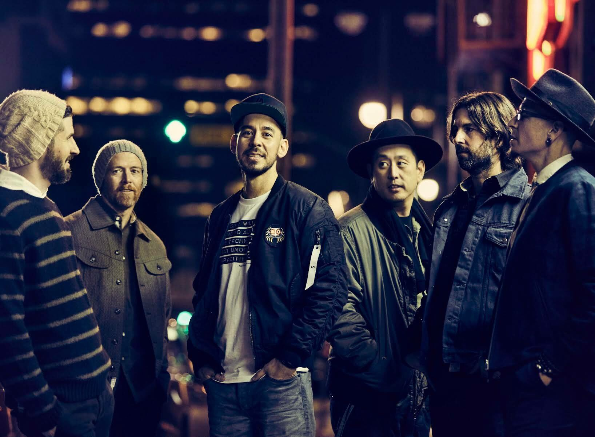
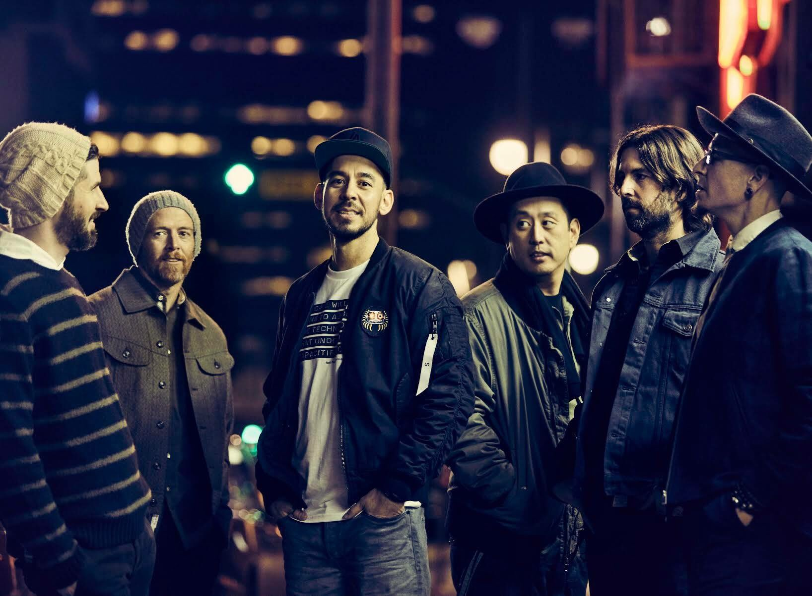

Linkin Park
Linkin Park es una banda de rock principalmente del genero Nu Metal formada en California en 1996 y conformada por 6 miembros: Mike Shinoda, Brad Delson, Dave Farrell, Rob Bourdon, Joe Hahn y Chester Benninton. Linkin park tiene 7 albumes de estudio en los cuales se puede notar distintos estilos musicales como rap, rock, hip-hop, electronico, alternativo.
It's starts with...
Los primeros años de la banda se remontan a un pequeño estudio del vocalista Mike Shinoda donde se reunían él, un amigo y compañero de colegio Agoura High School, Brad Delson, en la que grabaron un primer material a modo garage en 1995. Los dos estaban en el mismo instituto, donde conocieron a Rob Bourdon. Más adelante, cuando tomaron el tema de la banda de forma seria, Mike contactó con Joe Hahn que estudiaba en el Art Center College de Pasadena. La agrupación se formó inicialmente en Los Ángeles y comenzó en 1996 con una mezcla de géneros como nu metal, hardcore y hip hop. Al graduarse del instituto, los jóvenes californianos Mike Shinoda, Rob Bourdon y Brad Delson tomaron mayor participación en el grupo, y poco después, se unió Joe Hahn y Dave Farrell.
Con cinco integrantes buscaron a otro más, invitaron a Mark Wakefield como vocalista principal; con un presupuesto limitado, la agrupación grabó varias canciones en un estudio improvisado que culminó en un álbum demo, llamado Xero. Sin embargo, no tuvo éxito y les impidió obtener un contrato; a la vez, Wakefield al sentirse frustrado, decidió abandonar la formación para proseguir con sus estudios. Debido a la marcha de Wakefield del proyecto, Shinoda se vio en la necesidad de contratar un nuevo vocalista, de entre los solicitantes destacó Chester Bennington, un joven originario de Phoenix, Arizona, el cual formó parte del grupo Grey Daze hasta 1998, y en la que adquirió su experiencia con la grabaciones de discos desde los 16 años. Shinoda le hizo llegar algunas canciones interpretadas por el vocalista anterior y versiones instrumentales, para que grabara su voz sobre las últimas. Una vez finalizado el trabajo, Bennington contactó a Shinoda vía telefónica para mostrarle su propia grabación, los integrantes estuvieron sorprendidos por su voz, por lo que decidieron convocarlo a una reunión inmediatamente.
Tras la integración de Chester, el grupo pasó a llamarse Hybrid Theory; seguidamente trabajaron bajo su sello independiente, en la que grabaron el álbum Hybrid Theory EP. Pero debido a problemas legales con un grupo europeo llamado Hybrid, fueron forzados a cambiar de nombre nuevamente. Chester sugirió el nombre Lincoln Park (en honor al parque de Lincoln Park, situado en Santa Mónica), aunque con el conflicto del dominio lincolnpark.com modificaron la ortografía a Linkin Park. Pese a todos estos cambios el grupo no lograba encontrar cabida en algún sello discográfico, así que Jeff Blue, en aquel entonces vicepresidente de Warner Records, apoyó a la joven banda y después de constantes rechazos, lograron firmar su primer contrato en 1999.
And got so far...
Durante su carrera la banda gano varios premios en categorias como Artista Alternativo Favorito, Artista Rock Moderno del Año, Grupo Internacional Favorito, su album Hybrid Theory alcanzó el puesto número dos en el Billboard 200, y fue el séptimo álbum más vendido de la década del 2000, canciones como In The End, One Step Close, Numb obtuvieron certificaciones de disco de oro en Estados Unidos y Australia.
Varias de sus canciones fueron utilizadas en peliculas como Transformers (1, 2 y 3), Crepusculo, Matrix Reloaded, Need for Speed y tambien se utilizo la cancion The Catalyst para el videojuego Medal of Honor(2010).
Linkin Park también colaboró en distintos eventos de caridad, en gran parte para recaudar fondos en beneficio de las víctimas del huracán Charley en 2004 y después del huracán Katrina al año siguiente. El grupo donó 75 000 dólares a la Fundación Special Operations Warrior Foundation en marzo de 2004. También colaboraron en los esfuerzos por ayudar tras el terremoto de 2004 en el océano Índico y la creación de una nueva organización, Music for Relief, responsable de recaudar fondos para las víctimas. Por último, participaron en Live 8, una serie de conciertos a beneficio de la caridad para crear conciencia mundial. Junto con Jay-Z, se presentaron en Filadelfia y Pensilvania ante una audiencia global. Posteriormente la banda se reuniría nuevamente con el rapero durante la entrega de premios Grammy en 2006, en la cual Numb/Encore ganó el galardón a mejor colaboración de rap/cantada.
 

In The End...
Luego de la muerte Chester Bennington en julio de 2017, la banda canceló todas sus giras y eventos próximos por los siguientes 3 meses. En octubro de ese año Linkin Park decidió realizar un concierto, conocido como Linkin Park and Friends – Celebrate Life in Honor of Chester Bennington en honor a su vocalista, en el que reunieron varios artistas invitados . Actualmente la banda no se encuentra activa produciendo nuevos materiales o realizando giras, pero se puede encontrar a Mike Shinoda activamente en redes sociales y plataformas de Streaming interactuando con los fans.